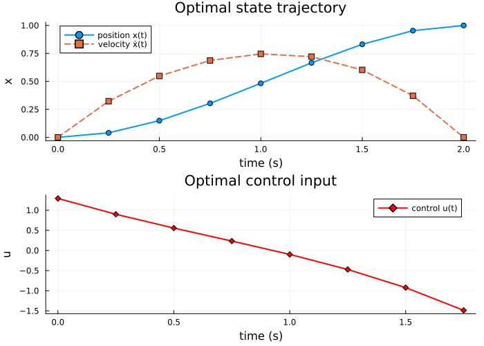

Optimal Control via the Feasible Trajectory Affine Space
This example demonstrates convex quadratic optimal control over the feasible trajectory affine space of a controlled linear system. We use the double integrator
\[ \ddot{x} = u \qquad\Longleftrightarrow\qquad \dot{q}(t) = \begin{bmatrix}0 & 1\\0 & 0\end{bmatrix} q(t) + \begin{bmatrix}0\\1\end{bmatrix} u(t),\]
where the state is $q = [x, \dot{x}]^\top$ (position and velocity) and the control input is the acceleration $u$.
We fix the initial and terminal states and find the LQR-optimal state-control trajectory via two complementary viewpoints:
- The feasible affine space (from the sheaf boundary-value problem): $\mathcal{T}(q_1, q_{k+1}) = \{ z_p + N\alpha : \alpha \in \mathbb{R}^r \}$.
- The reduced quadratic program in the free coordinate $\alpha$: $\min_\alpha \tfrac{1}{2} \alpha^\top (N^\top H N) \alpha + \alpha^\top N^\top (H z_p + f)$.
using CellularSheaves
using LinearAlgebra
using BlockArrays
using PlotsSystem definition
We discretize the continuous-time double integrator with sample period h using zero-order hold.
Ac = [0.0 1.0;
0.0 0.0]
Bc = reshape([0.0, 1.0], 2, 1)
h = 0.25 # sample period (seconds)
k = 8 # number of time steps8Build the ControlledTrajectorySheaf
A ControlledTrajectorySheaf wraps the zero-order-hold discretization $q_{t+1} = A_d q_t + B_d u_t$ as a path-graph sheaf. Its global sections are exactly the feasible sampled state-control trajectories.
F = EuclideanSheaf{Float64}(fill(2, 1)) # base sheaf: one vertex with a 2-dimensional stalk
ts = ControlledTrajectorySheaf(F, Ac, Bc, h, k)
println("State dimension n = ", ts.state_dim)
println("Control dimension m = ", ts.control_dim)
println("Steps k = ", ts.k)
Ad = ts.Ad
Bd = ts.Bd
println("Ad = ", Ad)
println("Bd = ", Bd)State dimension n = 2
Control dimension m = 1
Steps k = 8
Ad = [1.0 0.25; 0.0 1.0]
Bd = [0.03125; 0.25;;]Endpoint conditions
We start at rest and aim to reach a target position with zero velocity.
q1 = [0.0, 0.0] # initial state: position = 0, velocity = 0
qk1 = [1.0, 0.0] # terminal state: position = 1, velocity = 02-element Vector{Float64}:
1.0
0.0Feasible trajectory affine space
feasible_control_trajectory_basis returns:
z_p— a particular feasible trajectory (the minimum-energy / harmonic solution),N— a basis matrix whose columns span all endpoint-preserving perturbations.
Any feasible trajectory can be written $z = z_p + N\alpha$ for some $\alpha$.
z_p_raw, N = feasible_control_trajectory_basis(ts, q1, qk1)
n = ts.state_dim
m = ts.control_dim
p = (k + 1) * n + k * m
r = size(N, 2)
println("Trajectory dimension p = ", p)
println("Null-space dimension r = ", r, " (free parameters)")Trajectory dimension p = 26
Null-space dimension r = 6 (free parameters)LQR objective
We minimize the quadratic running cost
\[ J(z) = \tfrac{1}{2} \sum_{t=1}^{k} \bigl( q_t^\top Q\, q_t + u_t^\top R_u\, u_t \bigr) + \tfrac{1}{2}\, q_{k+1}^\top Q_f\, q_{k+1},\]
with identity weights on states and controls and a large terminal weight to encourage the terminal velocity to be small.
Q = Matrix{Float64}(I, n, n)
Ru = Matrix{Float64}(I, m, m)
Qf = 10.0 * Matrix{Float64}(I, n, n) # heavier terminal penalty
H, f, c = lqr_objective(ts, Q, Ru; Qf=Qf)
println("Size of H: ", size(H))Size of H: (26, 26)Reduced quadratic program
optimal_control_trajectory restricts the quadratic objective to the feasible affine space and solves the reduced problem
\[ R_{\mathrm{red}}\, \alpha^\star = -r_{\mathrm{red}}, \qquad R_{\mathrm{red}} = N^\top H N, \quad r_{\mathrm{red}} = N^\top (H z_p + f).\]
When the reduced Hessian is singular (which does not happen here), the minimum-norm optimizer is returned automatically.
z_opt, α_opt, z_p_block, null_basis =
optimal_control_trajectory(ts, q1, qk1, H, f)([0.0, 0.0, 0.040399563957539686, 0.3231965116603204, 0.14930676160293496, 0.5480610695028425, 0.3037100987563254, 0.6871656277242811, 0.4828139305958494, 0.7456650269919127 … 1.0, 0.0, 1.292786046641284, 0.8994582313700901, 0.5564182328857552, 0.23399759707052703, -0.09837706484502372, -0.47280560064661686, -0.9235908715920615, -1.4878865708839477], [-0.47280560064661686, -0.09837706484502372, 0.23399759707052703, 0.5564182328857552, 0.8994582313700901, 1.292786046641284], [0.0, 0.0, -6.696032617270492e-16, -8.465450562766835e-16, -1.15879528195251e-15, -1.1657341758564165e-15, -1.727784582072904e-15, -1.415534356397077e-15, -2.359223927328463e-15, -1.595945597898665e-15 … 1.0, 0.0, 0.0, 0.0, 0.0, 0.0, 0.0, 0.0, 16.000000000000078, -16.00000000000007], [0.0 0.0 … 0.0 0.0; 0.0 0.0 … 0.0 0.0; … ; -2.0000000000000004 -3.0000000000000018 … -6.000000000000008 -7.000000000000016; 1.0000000000000004 2.0000000000000018 … 5.000000000000009 6.000000000000015])Verify the first-order optimality condition holds.
q_p = Array(z_p_block)
Rred = null_basis' * H * null_basis
rred = null_basis' * (H * q_p + f)
res = norm(Rred * α_opt + rred)
println("Optimality residual ‖Rred*α - (-rred)‖ = ", res)Optimality residual ‖Rred*α - (-rred)‖ = 7.105427357601002e-15Verify that z_opt is in the affine space.
affine_err = norm(Array(z_opt) - (q_p + null_basis * α_opt))
println("Affine-space error ‖z_opt - (z_p + N*α)‖ = ", affine_err)Affine-space error ‖z_opt - (z_p + N*α)‖ = 0.0Plot: state trajectory and control input
The state blocks are z_opt[Block(t)] for t = 1, …, k+1; the control blocks are z_opt[Block(k+1+t)] for t = 1, …, k.
times_state = h .* (0:k)
times_control = h .* (0:k-1)
positions = [Array(z_opt[Block(t)])[1] for t in 1:k+1]
velocities = [Array(z_opt[Block(t)])[2] for t in 1:k+1]
controls = [Array(z_opt[Block(k+1+t)])[1] for t in 1:k]
p_pos = plot(times_state, positions;
lw=2, marker=:circle, label="position x(t)",
xlabel="time (s)", ylabel="x",
title="Optimal state trajectory")
plot!(p_pos, times_state, velocities;
lw=2, marker=:square, linestyle=:dash, label="velocity ẋ(t)")
p_ctrl = plot(times_control, controls;
lw=2, marker=:diamond, color=:red, label="control u(t)",
xlabel="time (s)", ylabel="u",
title="Optimal control input")
state_control_plot = plot(p_pos, p_ctrl; layout=(2, 1), size=(700, 500))
state_control_plot
Verify endpoint conditions and discrete dynamics
Both endpoints must be satisfied exactly, and the trajectory must obey the discrete dynamics $q_{t+1} = A_d q_t + B_d u_t$ at every step.
@assert Array(z_opt[Block(1)]) ≈ q1 "Initial state not satisfied"
@assert Array(z_opt[Block(k + 1)]) ≈ qk1 "Terminal state not satisfied"
for t in 1:k
qt = Array(z_opt[Block(t)])
qt1 = Array(z_opt[Block(t + 1)])
ut = Array(z_opt[Block(k + 1 + t)])
@assert norm(Ad * qt + Bd * ut - qt1) < 1e-10 "Dynamics violated at step $t"
end
println("All endpoint and dynamics constraints satisfied.")All endpoint and dynamics constraints satisfied.Relationship to the sheaf boundary-value problem
The particular solution z_p is the harmonic extension of the boundary data $(q_1, q_{k+1})$ to the full trajectory space. It minimises the sheaf Laplacian energy (i.e., the squared coboundary $\|d z\|^2$).
The null-basis columns $N_j$ are the global sections of the controlled sheaf (after zeroing the two boundary vertices), which are exactly the endpoint-preserving degrees of freedom.
The optimal trajectory lives in the affine space z_p + N α*, where α* is chosen to minimise the LQR cost restricted to that affine space. The two viewpoints — sheaf/harmonic-extension and quadratic/LQR — combine cleanly because the feasible set is a finite-dimensional affine subspace.